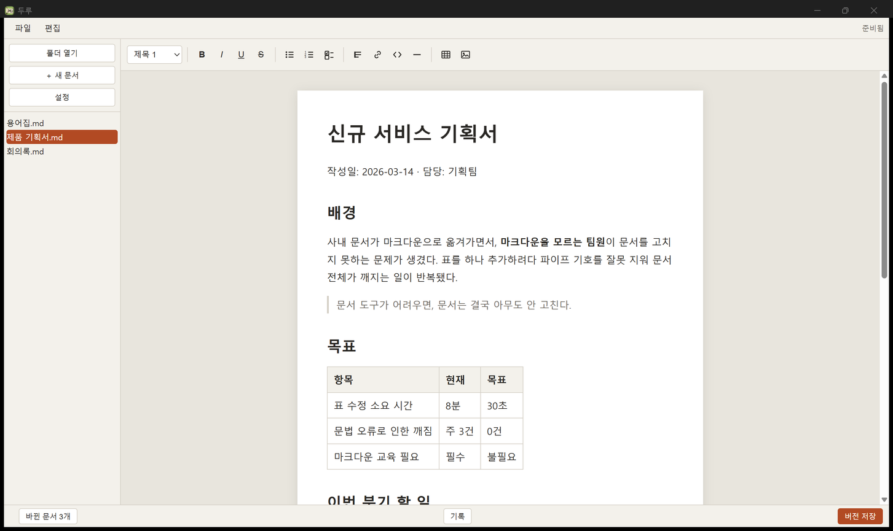

화면에는 ** 도 | 도 보이지 않고, 저장되는 파일은 사람이 읽을 수 있는 평범한 마크다운입니다.
No ** or | on screen, and the file on disk stays ordinary, human-readable Markdown.
문서는 내 컴퓨터에만 저장됩니다 · 계정 없음 · 서버 없음
바깥으로 나가는 건 새 버전 확인뿐이고, 그마저 끌 수 있습니다
Your documents stay on your machine · No account, no server
The only thing that leaves is a version check — and you can turn it off
워드처럼 편집해도, 문서에 있던 것이
하나도 사라지지 않는다
Edit it like a word processor, and nothing that was in the document disappears.
위지윅 편집기는 자기가 모르는 문법을 조용히 지웁니다. 화면에서 안 보였으니 사용자는 알아채지도 못합니다. 두루는 다루지 못하는 문법도 지우지 않고 얼려서 보존한 뒤, 저장할 때 원래 글자를 그대로 되돌려 씁니다. A WYSIWYG editor silently deletes the syntax it doesn't understand. The content was never visible on screen, so you never notice it's gone. duru freezes what it can't manipulate, preserves it verbatim, and writes it back byte-for-byte on save.
표는 칸을 눌러 채우고, 할 일은 네모를 눌러 지웁니다. 마크다운을 몰라도 손이 먼저 압니다. Click a cell and type. Click a checkbox to tick it. Your hands know it before you learn Markdown.

툴바에서 넣고, 칸을 눌러 입력합니다. 행·열을 더하고 지우고, 방향키로 칸 사이를 옮겨 다닙니다. Insert from the toolbar, click a cell and type. Add and remove rows and columns; move between cells with the arrow keys.
굵게·기울임·밑줄·취소선. 손이 기억하는 그 단축키 그대로 씁니다. Bold, italic, underline, strikethrough — on the shortcuts your hands already know.
글머리표·번호·할 일. Tab으로 들여쓰고, 체크박스는 눌러서 지웁니다. Bullets, numbers and to-dos. Tab to nest; checkboxes tick on click.
워드·웹·구글 문서의 서식을 살려서 붙입니다. 마크다운으로 해석해 붙이는 길도 따로 있습니다. Keeps formatting from Word, the web and Google Docs. A second shortcut parses the clipboard as Markdown instead.
끌어다 놓으면 문서 옆 폴더로 복사하고 상대경로로 걸어 둡니다. 문서를 옮겨도 같이 갑니다. Drop a file in and it is copied beside the document, linked by relative path. Move the folder and it still resolves.
고친 시점을 남기고, 무엇이 바뀌었는지 색으로 봅니다. Git을 몰라도 됩니다. Keep a snapshot of a document and see what changed, in colour. No Git knowledge required.
폴더가 이미 Git 저장소라면 아래에 막대가 하나 나타납니다. 거기 적힌 말은 셋뿐입니다. If the folder is already a Git repository, a bar appears along the bottom. It says three things, and only three.
문서와 그림만 다룹니다. 저장소를 새로 만드는 일은 하지 않습니다. Only documents and images are ever touched. duru never creates a repository for you.
위지윅 편집기는 저장할 때 문서를 제 방식으로 다시 씁니다. 그대로 두면 한 글자만 고쳐도 파일 전체가 바뀐 것으로 기록됩니다. 두루는 처음 열 때 한 번 전체를 정돈합니다. 그 다음부터는 직렬화가 결정론적이라, 손대지 않은 곳은 바이트까지 똑같이 다시 나옵니다. WYSIWYG editors rewrite a document in their own style on save, so changing one word marks the whole file as modified. duru normalizes the document once, when it is first opened. After that, serialization is deterministic: untouched regions are reproduced byte-for-byte.
코드 포매터를 처음 들일 때 첫 커밋만 크고 그 뒤가 조용한 것과 같은 이치입니다. The same shape as introducing a code formatter — one large first commit, quiet ones after.